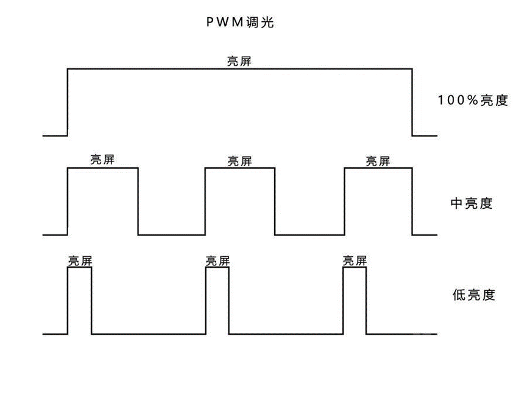
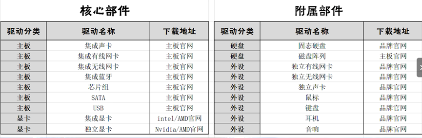
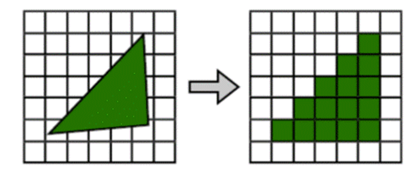
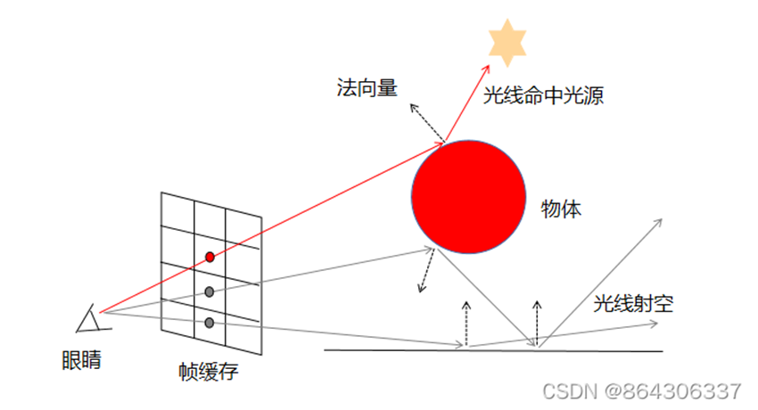
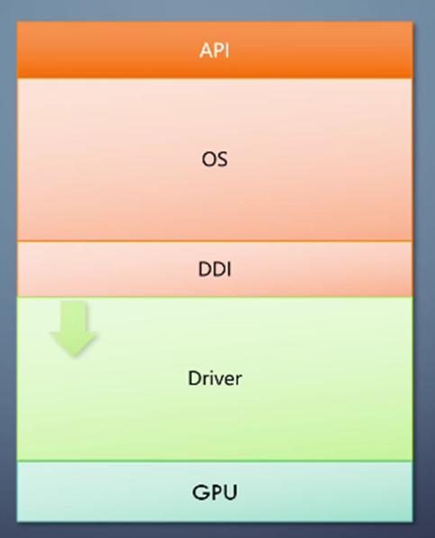
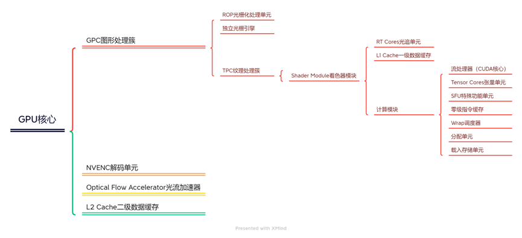

主板是电脑的核心组件，它提供了一个平台，用于安装和连接电脑的其他硬件组件
主板上有多个插槽和接口，例如CPU插槽、RAM插槽、PCIe插槽、SATA接口、USB接口等，它们允许用户安装和连接各种硬件设备。主板还包含了一些内置的芯片和电路，如BIOS/UEFI芯片，负责电脑的启动过程和硬件管理。
越好的主板，其供电能力、散热用料、I/O接口等都要更强。但对于大部分用户来说，一般的主板即可，不会影响电脑的性能
I/O 接口区域
一般位于左上角，包含网线、USB 等接口
CPU 区域
一般位于中间偏上的部分，主要用于安装 CPU 、安装散热
CPU 供电区域
CPU 四周的供电区域，圆柱体为电容，立方体为电感，类似小芯片的为 MOS 管，电感和 MOS 管基本是 1:1 的数量，每一组称为一相，负责将输入的电压转化成 CPU 工作的电压
内存区域
一般位于右上角，用于插内存条
拓展区域
一般位于下方，有多种接口，如 M.2 接口和 PCIE 接口等
南桥
一般位于右下角，即本主板的芯片组区域。南桥芯片组负责连通非与 CPU 直连的接口
针脚
位于主板四周。针脚也叫跳线，可以连接其它接口以拓展出更多的接口，如耳机跳线、RGB 灯跳线、散热风扇跳线等
主板大小和主板定位并无直接关系，只是主板版型越大，越容易做进去更多的功能，也要求更大的机箱
EATX：超大号版型
ATX：标准版型
MATX：中号版型
ITX：小号版型
存在于早期的计算机主板中，称为图形与内存控制器，和CPU关系密切，在主板靠近CPU的位置，包含高速设备的控制器，如PCIe控制器和内存控制器等。随着制造工艺的进步，内存控制器已集成进CPU中，而PCIe控制器被划归到南桥管理
南桥（South Bridge）相当于是CPU的秘书，把一些不重要、实时通信要求不高的外设如网卡、NVME固态、机械硬盘等直接连接在南桥上，通过南桥汇总后再交给CPU，减轻CPU的负载
由于北桥已经消失，目前主板的芯片组一般就是指南桥芯片组，如Z790主板使用Z790芯片组。南桥最开始仅包含磁盘控制器等低速设备的控制器，在北桥小时候南桥也承担起PCIe总线控制的任务
通过PCIe总线直接和CPU相连的称为直连，如显卡直连。南桥上连接的所有外设的总速度，无法超过南桥和CPU之间的带宽
主板的芯片组一般都是指南桥的芯片组型号，例如 Z790 主板的南桥就是Z790芯片组
PCIE 通道也称 PCIE 总线，是PCI的升级，频率非常高
PCI是并行总线，而PCIe是串行总线，PCIe通道通过PCIe控制器和CPU相连，由PCIe控制器决定可支持的最高PCIe通道数
PCIE 既可指一种接口，也可以指一种通道。若不单独说“PCIE接口”，一般都是指通道
PCIe插槽（接口）：可以插显卡、网卡等，也可以转接成M.2、Type-C、USB等
PCIe通道：承担数据传输总线的任务，例如 PCIE 接口、雷电接口都是使用PCIe通道传输数据的，根据PCIe带宽的不同可分为残血、满血接口
根据通道数：可划分为 X1、X2、X4、X8、X16，X1代表一个通道，X16代表16个通道，速度依次上升，X16是X1的16倍，此外这个数字也和接口的长度有关，数字越大长度越长
根据版本：PCIE 有不同版本，如 PCIE 5.0
PCIE通道速度由通道数和PCIe 版本相关，如PCIe 4.0 X8和PCIe 3.0 X16速度相等，下一代的PCIe是上一代相同通道时速度的两倍
雷电3满血是PCIe X4速率的，残血是X2速率的，速度降了1倍
可以降一个高速PCIe通道拆分成多个低速度的通道，例如PCIe X16拆分成两个X8的通道
内存的 RAM 的一种，更准确的说是 RAM->DRAM->SDRAM（同步动态随机存取存储器），目前主要有三种：
DDR（Double Data Rate，双倍速率 SDRAM）：主要面向 PC 端，“双倍”指的是数据速率是总线时钟频率的两倍
LPDDR（Low Power Double Data Rate，低功耗双倍速率SDRAM）：主要面向移动端
为了压低功耗，LPDDR 系列位于片上，不仅降低了工作电压，且主要提高预读取位数来提升性能，因此功耗小、频率高、带宽较大，但延迟比 DDR 高不少。另外，LPDDR 单条内存位宽没有DDR高，现在DDR已经原生64bit位宽了，但 LPDDR 仍然是 32bit
GDDR（Graphics DDR SDRAM，图形用双倍速率SDRAM）：主要作为显存使用，主要强化了带宽，但增大了延迟
GDDR 是基于 DDR 技术的，但需要注意，GDDR5 使用的是DDR3的技术，GDDR6使用的是DDR4的技术
XMP（Extreme Memory Profile）：是 SPD 技术的延伸，在 Intel 平台中直接叫 XMP，在 AMD 平台也叫 A-XMP、DOCP 等
用于开机内存自检的信息，让主板了解到内存信息，以此给出合理的内存工作参数，存储在内存PCB上的EEPROM中
是厂家已经测试完的内存可以跑的一套高频（超频）预设，包含了电压、频率、时序等多项参数，和SPD一起存储在EEPROM中，开机自检时可以被主板读取，但为了稳定性往往不会启用，而是需要在 BIOS 里手动打开XMP
XMP1 和 XMP2：往往在预设里也有多个选项，一般来说1和2并没有绝对的好坏，需要根据情况选用
一般主板支持双通道，相比单通道，双通道内存可插上两根内存条，将数据拆分并分别存在两根内存中，类似于多体存储器，且有两条通道通往内存，这样可获得内存带宽翻倍的效果
一般四槽主板，1、2 槽是一个内存通道，3、4槽是一个内存通道，内存通道数量由内存控制器决定，和内存槽数量无关。此外，最大支持内存大小也是由内存控制器决定的，PC 端的内存控制器一般位于主板上，移动端则一般集成在 SoC 中
可以使用两根不同容量的内存条组双通道，此时容量小的内存，其全部容量都是双通道，而容量大的内存中，多出来的一部分容量实际上是单通道的速度
一般不推荐使用不对称双通道，因为系统并不知道双通道是哪一部分
要组多通道内存，多根内存尽量使用套条。套条是一组具有相同规格和性能的内存条，它们生产批次一致，几乎相似程度高，兼容性最好
$内存频率=Ratio倍数 * 基础频率 * 参考系数$
基础频率：一般为 100MHz，只有高端主板才支持调整基频
参考系数：是一种异步工作的技术，有 1 和 1.33 两种，Intel 处理器中带 K 的CPU可自由切换，非K 处理器只支持1.33
Ratio倍数：类似 CPU 的倍频，必须为整数，内存频率可以是整个基础频率的整数倍而不影响其他元件的工作。它由内存控制器的体质决定，常见的有Ratio=27~30
其他条件一定时，内存频率越高延迟越低
内存工作频率受到内存控制器工作频率的制约，根据两者频率的比值可划分为以下两个模式：
Gear1模式：内存控制器频率和内存工作频率为 1:1，两者同步工作，内存延迟低，效能最大化
Gear2模式：内存控制器和内存工作频率为 1:2，可减轻内存控制器的压力，让内存达到更高的频率
当Gear1切换到Gear2时，延迟可能有一个突然的上升，然后随着内存频率的上升，延迟才缓慢下降
当内存频率比较低（一般是3600MHz以下），无需分频，而当使用高频内存时，则需要分频才能让内存跑到较高的频率
例如11代酷睿CPU，它的内存控制器体质一般支持Ratio=27~30，板厂采取保守策略就是27顶天，在Gear1模式下$最高内存频率=27*100*1.33=3600MHz$，要使用更高频率的内存条就需要切换到Gear2模式，但是由于不带K的CPU无法调参考系数，非Z系列主板无法动基础频率，且Ratio必须为整数，所以有些频率在Gear2下不一定能支持，具体看配置
显然Gear2模式能提高主机支持的内存频率上限，可以利用更高频率的内存带来更大带宽。尽管内存频率越高延迟越低，但分频的存在仍然会让内存的延迟增大（高频率的内存在通信时需要等待内存控制器）
时序是内存条的性能指标之一，以CL（CAS Latency，列地址选通延迟）表示。时序越低，内存条的响应速度越快，延迟越低
PC使用的是低压直流电，而家里一般是220V交流电，电源一个很重要的功能就是这个转化
转化率：电源输出功率与电源输入功率之比，越接近100%越好。转化率不是固定的，一般在40%~50%的负载下转化率最高
常见电脑电源的功率如 650W 指电源输出功率
衡量电源的转化率和功率因素
依次为：白牌、铜牌、银牌、金牌、白金牌、钛金牌
不包含接口数量、线材长度、过载保护等参数，即牌越高不一定越好，转化率的高低仅仅是省下一些电费而已。但一般而言，电源好坏和认证等级是成正比的
电源模组和电源品质完全无关
非模组电源：所有线都是从电源里定死了的，不可更换，多余的线也无法拆掉
半模组电源：仅保留必须的24pin主板供电和4+4pin的CPU供电，其余的都以接口的形式存在，按需配
全模组电源：整个电源的所有线缆都是以接口的形式存在
定制线：全模组和半模组电源可以选用定制线，可以把主机装得好看一点
根据所使用的总线规格判断速率是最准确的
规范了接口的形态
PCI-E接口：使用PCI-E通道因此称为PCI-E接口，使用NVMe协议，可插显卡、声卡、固态等，而PCIE接口也可以转化成很多接口
SATA接口：使用SATA通道因此称为SATA接口，使用AHCI协议，一般用于硬盘连接，主要是机械硬盘，也有部分固态
mSATA接口：和SATA类似，主要减小了体积，协议、速率等均一致
SATA Express接口：使用PCIE总线，可使用AHCI或NVMe协议，但目前已淘汰
M.2接口：可使用SATA通道（AHCI）或PCI-E通道（AHCI或NVMe），目前SSD主流的物理接口
SAS接口：主要在服务器上使用，在SATA接口上改良而来
也就是总线，规范了速率等标准
PCI-E通道：速率丰富，如PCI-E X1, X4, X8, X16, X32，速率依次上升，目前广泛使用PCIE3.0和PCIE4.0
没错 PCIE 不仅是接口名，也是通道名
SATA通道：以前用于接硬盘、光驱等，目前广泛使用SATA3.0
SAS通道：企业级别硬盘使用的通道
FC通道：光纤通道
相当于通讯协议的应用层，规范了如何识别对方、如何建立连接、数据编解码的方式等等，如同高速公路上的不同类型的汽车，载货量、速度等均有不同
NVMe协议：设计跑在PCI-E通道上、一种专门针对SSD、目前消费级最先进的协议
使用NVMe协议，必然使用PCI-E通道，而使用m.2物理接口则可能是PCI-E也可能是SATA
SATA 协议：SATA 协议使用 SATA 通道，可以使用 SATA 接口，也可以使用 M.2 接口
AHCI协议：机械硬盘时代的主流数据传输协议，例如使用SATA通道
IDE协议：机械硬盘时代常用的协议
主要分为薄膜键盘和机械键盘
低成本低噪音，体积小，一般大多数笔记本都是薄膜键盘
小时候的游戏手柄也是薄膜类型的
主要以轴体分类
黑轴：段落感较弱，声音较小，按下去力道较大，适合游戏但不适合打字
红轴：有着和黑轴一样的段落感，但相较于黑轴所需按压的力道较小，游戏和办公打字均可
青轴：段落感和机械感最强，打字声音大，一个人办公打字时很爽，但对游戏来说不适合
茶轴：万精油，所有参数基本都卡在中间，游戏和办公均可
此外还有其它许多轴体
键盘第一个指示灯：指示数字小键盘是否开启，按NumLock切换；第二个指示灯：指示大写锁定是否开启
主要技术路线分为 LCD 系和 LED 系
LCD系
偏振片和液晶是LCD的核心，通过控制偏振片的角度即可控制亮度，其屏幕的背光由LED灯带和匀光板得到，即使全屏显示黑色也仅仅是控制偏振片的角度使其不透过光，因此无法呈现纯黑且黑色状态下无法省电，对比度偏低
传统 LCD 屏幕
根据液晶分子的角度可分为以下三种：
VA屏幕：对比度高，可视角度一般，响应速度较差，适用于电影、3A单机用户。不过近年来响应速度有很大改善，但仅限于旗舰产品
IPS屏幕：对比度一般，可视角度广，响应速度适中，适用于大多数用户
TN屏幕：对比度很低，可视角度较差，响应速度最快，适合FPS高帧率竞技玩家
QLED：属于 LCD 范畴。它在LCD的基础上对背光进行改进，原理是使用蓝光照射不同直径的量子点材料会发出不同颜色的光。QLED的显示器可以是IPS也可以是TN
MiniLED：同样是LCD的范畴，本质上就是加了分区背光，带来了更高的对比度，缺点是可能产生光晕现象
LED系
使用LED灯珠，即使用发光二极管实现显示，它可以控制每个子像素的亮度，对比度极高且不存在光晕现象
OLED：有机发光二极管，采用有机材料是因为无机材料造的LED灯珠无法做小。它响应速度快，可实现曲面屏和折叠屏，且暗色情况下能省电。缺点是材料会老化，即出现烧屏现象，另外也有PWM调光和等效分辨率下降等问题
microLED：回归无机材料，本质上就是尽量将灯珠减小，因为使用有机材料必然产生材料老化问题。microLED是目前可预见的最好的屏幕技术
调光：即改变屏幕亮度
PWM调光：PWM即 pluse width modulation（脉冲宽度调制），这种调光方式调节屏幕亮度并不改变屏幕功率，而是利用人眼视觉暂留原理，靠屏幕的亮、灭交替的时间，给人眼感觉亮度变化。灭屏的时间越长，眼睛就会认为屏幕亮度越低。这种亮、灭交替就是频闪

亮、灭交替的速度越低，对眼睛造成影响的可能性就越高。但这不是绝对的，因为每个人对闪烁的敏感程度不同，可能有的人感到视觉疲劳而另一个人不会，但就总体而言，频率越低影响越大，而亮、灭频率交替到达一定阈值，再往上可认为对人眼无影响了，但这个阈值暂无定论
由于OLED屏幕的限制，在低亮度时使用DC调光将导致屏幕显示出现偏差，所以一般手机都使用低频PWM调光。高亮度时电流足够大，可以采用DC调光而对屏幕显示影响较小
DC调光：DC即direct current（直流电），使用DC调光的屏幕通过提高或降低电路功率来改变屏幕亮度，无频闪
使用一般LCD等屏幕可以直接控制整个背板的功耗，无论屏幕亮度均是DC调光
DC调光在相机录制下不会出现移动的黑条
类DC调光：一类搭载OLED屏幕在低亮度情况下使用的调光方案，即从软件角度来模拟DC调光，本质上是高频PWM调光，使用相机拍摄屏幕仍然可以看到刷新的黑条
灰阶响应时间GTG：表示一个像素在两种颜色之间变化所需的时间，这个响应速度越快，就能降低屏幕的拖影，反应更迅速
HDR：只要说支持HDR10的，都可以认为是没有严格HDR功能的，必须支持HDR400以上才算具有HDR功能的显示器。需同时打开显示器的HDR以及Windows显示设置中的HDR与HDR流式视频传输
主控：控制着固态硬盘数据的读取和写入，对外通过M.2接口和PCIe总线和外部相连
DRAM缓存：存放着文件的逻辑-物理映射表（FTL），以及其它用途，其大小一般和固态的容量成正比
存储单元：基本存储单元是浮栅晶体管，通过其中存储的电子数目表示存储的是0还是1
SLC：每个浮栅晶体管可存储1bit数据，当存储的电子阈值大于某个数时（如5个）就表示存储1，否则表示存储0
MLC：每个可以存储2bit数据，如有6-7个电子即表示存储00，4-5个电子表示存储01
TLC：每个可以存储3bit数据，如1个电子表示存储110
QLC：每个可存储4bit数据
其中SLC的浮栅晶体管中电子状态只有两种，擦写简单，读写速度最快，QLC则最慢，但SLC的容量最低（时间和空间的权衡）。此外，浮栅晶体管有擦写寿命，SLC（包括模拟SLC）寿命最短，因为1bit就要擦写一次
浮栅晶体管的结构决定了闪存写入速度要远慢于读取速度，且写入速度受颗粒的影响更大，读取则几乎不受颗粒种类的影响
诸如SLC、TLC等在浮栅晶体管的物理结构上并没有本质区别，只是主控将其电子数目进行了划分从而表示不同数据，因此可以把MLC等模拟成SLC使用以达到更快的速度
缓内速度：硬盘中将部分存储单元模拟成SLC使用，写入数据时先写入这一部分中，速度很快。等硬盘闲置下来后再将数据真正写入硬盘。这部分区域即 SLC Cache，它的大小和当前硬盘剩余容量有关，当剩余容量过小，SLC Cache就会显著降低，读写速度也会下降
缓外速度：当单次写入数据量超过SLC Cache时，以及没有采用SLC Cache时，体验到的是MLC等单元的正常速度而没有SLC加成，所以速度将降低
固态硬盘有扇区、簇两个重要概念，扇区是硬盘存储数据的物理单位。簇是一个存储单元，可以包含多个扇区，一个簇只能对应一个文件
4K指的是4096字节，是固态硬盘一般的扇区大小，即4K扇区。但传统的硬盘是512B扇区，而且系统一般也是认512B一个扇区，因此把固态硬盘的一个扇区在逻辑上分成8份，称为逻辑扇区。4K对齐就是让8个逻辑扇区也只对应一个文件，否则一个4K扇区可能对应多个文件。但固态硬盘擦写仍然以4K即一个扇区为最小单位，由于没有对齐，导致硬盘需要反复擦写，使得寿命降低
机械硬盘写入之前不需要擦除数据，因此4K对齐无关紧要。但对于固态硬盘来说，格式化时必须勾选 4K 对齐
将买来的硬件组装
装系统可使用官方工具，也可以使用PE辅助安装。无论哪一种，装系统的本质就是运行提前在U盘内放好的 Windows 安装包
三种格式化方法：
FAT32：兼容性最好，但单个文件不能超过4G，单个分区不能超过32G
exFAT：推荐
NTFS：推荐
步骤：
制作启动盘：将U盘格式化后，直接去微软官网，直接按官网的步骤走就可以
如果卡0%可能是防火墙问题
插入启动盘，进入主板 BIOS，选择从U盘启动（将其拖动到第一启动项），优先选择带有 UEFI 的U盘，保存并重启
磁盘存储数据的结构目前主要有两种：
MBR：Legacy引导，即使用 BIOS 进行引导启动
GPT：UEFI 引导，更为先进，优先选择
UEFI（统一可拓展固件接口）由EFI更新而来，拥有安全启动（固件验证）的特性，存在无法通过验证的固件将无法开机
进入Windows安装程序，将Windows安装到空硬盘中
按需进行磁盘分区，磁盘分区（固态硬盘）一定要勾选对齐分区到此扇区的整数倍（4K对齐），数值2048或4096都可以
如果磁盘格式和引导方法不相同，将报错，需要将磁盘数据结构切换：shift+F10打开CMD，输入diskpart，回车，再输入list disk即可列出所有磁盘，注意区分磁盘。select disk 磁盘号，回车即可选择磁盘，输入clean清空磁盘，再输入convert GPT即可将磁盘切换成GPT格式 。输入两次exit即可退出CMD
重启，即可进入Windows
不要联网，否则可能不好激活系统
在装有PE系统的U盘内提前下好系统的ISO文件，同样是U盘启动。这里可使用PE里的软件对空的硬盘进行分区。然后右键ISO文件，选择装载，并运行setup.exe文件即可安装Windows
手动补齐各个硬件的驱动，操作系统里的驱动只能临时凑合用
Windows如果检测到联网会自动下载驱动，但型号识别不一定准确，且型号可能过老
第三方软件安装驱动，但存在捆绑问题
手动安装驱动

网络附加存储（NetWork Attached Storage，NAS），相当于一个个人组的网络云盘
相当于用一个小功耗的电脑，装载一堆硬盘，然后接入局域网内，并开启这台电脑的局域网磁盘共享，这就是一个局域网磁盘服务器。如果用端口映射将其挂在到公网上，就可以随时访问
系统自带的共享磁盘服务：右键磁盘，属性-共享-高级共享-勾选共享此文件夹。进入控制面板，进入网络和共享中心-更改高级共享设置，把网络发现全部打开，随后进入网络连接属性，查看局域网ip。在另一台电脑上的我的电脑，通过//ip即可访问该磁盘，右键-映射网络驱动器即可映射到本电脑中，只要共享电脑在线且局域网ip没有动过，就可以访问它的磁盘
一般使用服务器平台组NAS，一般消费级平台不适合组NAS，毕竟需要7x24的运行
CPU盒装是零售商品，而散片是供给给OEM厂商用作整机原料的，但两者本质上一模一样
盒装是有保修等服务的，但散片没有
散片（尤其是高端的）可能是经别人测试过的大雷，体质差
盒装会赠送散热器，但这个散热器比较垃圾，一般还是自己买
台式电脑散热扣具将对CPU施加相当大的压力，此时铜盖就可以起到保护die（CPU核心）的作用，而笔记本电脑由于是已经设计好的散热，所以CPU核心是裸露在外的，不需要铜盖的保护。不过一般铜顶盖上覆盖了一层镍，防止铜氧化或发生其它反应。所以看起来是银灰色的
铜顶盖和散热器之间一般是自己涂硅脂，而顶盖和die之间所用的散热材料，可划分为用硅脂填充或使用钎焊工艺（一般用铟），有多层（包括黄金），价格高，但可能发生钎焊层材料断裂等情况
早期 TDP 可以作为CPU的功耗参考，比较准确。但随着技术的发展，睿频等技术的加入，TDP目前几乎没有参考价值，睿频功耗一般会超过TDP，而默频下功耗可能低于TDP
PL1功耗：是长时睿频功耗，是散热到位的情况下CPU睿频能一直维持的功耗
PL2功耗：在一小段时间内睿频到非常高的频率和功耗，极限功耗
丐卡的功耗和TDP是接近的，但对于高端卡，厂商可能把功耗墙以及频率给得更高，此时一般用GDP（整卡功耗）来衡量显卡功耗
注意核心功耗和整卡功耗是不同的
$CPU频率=外频 * 倍频$
例如CPU主频为5.0GHz，外频100MHz，倍频可以是50，对CPU的超频理论上可超倍频或外频，也可以两者同时超，也可以降一个超一个
但目前CPU外频和主板中其它设备的频率是相关的，改动外频降牵一发而动全身，因此目前通常采用超倍频的方式超频CPU
CPU和GPU对核心的数量的定义并不相同，不能直接比较。当然，也可以说 GPU 的核心都是小核、残废核心，CPU 的核心都是大核、全能核心
GPU核心众多，只能做一些简单的运算，擅长在大量数据上做简单运算；总体分成多个模块，各有各的用途和特点
CPU核心不多，擅长在小数据上做相对复杂的串行计算和逻辑控制；通用编程，模块少
GPGPU是通用图形处理器，相较于GPU去掉了为图形处理而设计的加速单元，可以理解为就是一块专门做并行运算的加速卡，而不能玩游戏
CPU上的主要是SISD，带有一定的SIMD指令集做补充，如SSE指令集可以对四个数进行相同的操作，类似于4车道。而AVX-512指令集，宽度到了16，也就是能同时对16个32位数进行运算。CPU每个核可以做多条数据流的运算
对于GPU，可以理解为一整块GPU的所有核心（指统一shader核心）共同组成了一个SIMD，每个核心都是SIMD里的一条道路，这些道路上的数据流方向必须一致，且每条道路上只能有一个数据
而GPU的流水线宽度，则是通过核心数/控制器数来表示的
因为GPU的特殊性，每个控制器控制下的shader核心都必须对数据进行相同的操作，因此常用的分支，执行效率就会非常低下。为了改进，MIMD（多指令多数据流）也被用到了这里。传统的MIMD是每个数据流通道都有自己的控制器，并且做成了“立交桥”的形式，每个数据流可以做任意操作，但这种设计对GPU来说复杂度提高了很多
CUDA（Compute Unified Device Architecture，统一计算硬件架构），是由 NVIDIA 推出的通用并行计算架构，该架构使GPU能够解决复杂的计算问题
CUDA 包含了 CUDA 指令集架构（ISA）以及 GPU 内部的并行计算引擎。 开发人员可以使用 C 语言来为 CUDA 架构编写程序，所编写出的程序可以在支持 CUDA 的处理器上以超高性能运行
CUDA 3.0 开始支持C++和Fortran
硬件基础：GPU内部特殊的指令集（和CPU内部的机器码是不一样的），以及并行计算引擎
软件基础：驱动、CUDA编译器和特殊的CUDA的API（和DirectX等图形API同一层级，往下都是调用驱动将编译后的代码进一步翻译成机器码）等
开发人员可以通过CUDA软件进行GPU编程，调用CUDA硬件进行通用计算
CUDA编程中，CPU被称为host（主机），GPU被称为device（设备）
并行编程：和CPU串行编程（一行行执行代码）不一样，GPU创建线程的成本非常低，可轻易创建多个并行运行的线程
异构编程：CPU为主设备，GPU作为外设。因为最终输出等都需要由CPU来执行，因此需要在内存和GPU显存之间频繁交换数据，而与GPU显存交换数据就需要使用特定的函数来执行
任何复杂图形在计算机中都是由无数个三角形构成
复杂三维图形的每个点被称为顶点（vertex），计算机通过计算所有顶点的三维坐标变换，得到变换后的顶点，并且对这些顶点所围成的三角形，在屏幕上所铺盖的区域进行像素渲染（片元着色），这个环节称为光栅化（Rasterize）
光栅化是具体在屏幕上实现渲染，而像素shader是先行计算出每个像素应该有的颜色，后者在前
光栅化（Rasterization）也叫光栅渲染，是一种将矢量图形转换为像素（点阵图）的过程。光栅化的核心是投影，如下图所示：

屏幕是“离散”的，由像素点组成，并不是连续的。而3D模型以及矢量图往往都是连续的。离散的屏幕无法直接显示“连续”的物体，因此需要对其进行“离散化”，即对采样点进行投影，将其结果存储到帧缓存（存储每个像素的颜色值）上，最后显卡负责将其渲染到屏幕
目前大部分可视化工具和游戏都采用光栅化
光线追踪（Ray Tracing）是一种先进的计算机图形渲染技术，它通过模拟光线在场景中的传播来生成图像
与传统的光栅化技术相比，光线追踪能够更真实地模拟光线的反射、折射、散射等物理现象，从而创造出更加逼真的视觉效果

考虑到光线众多，且不可能全部入射到人眼中，因此目前光线追踪技术一般都是反向光线追踪技术
根据光路可逆的原理，将光路的起点改到人眼，也就是想象只有眼睛一个发射源，从这个发射源出发的光线，经过多次反射后若能到达真正的发射源，比如灯泡，则此即一条有效的光线
事实上，就算使用反向光线追踪技术，要求光线和射中物体上的三角片求交仍然不是一件容易的事，尤其是精度高、光线多时，需要消耗巨大的计算量
包围盒技术在原始场景中构造众多的“盒子”，将模型包围起来，先计算光线和包围盒的关系，若光线没有射中这个包围盒，则也必然不会射中该盒子所包围的任何一个三角片，达到简化计算的目的
包围盒不仅应用在光线追踪中，在碰撞检测、空间分割等领域有着广泛的应用
着色器是一种运行在 GPU 上的小型程序，用于控制图形渲染过程中的特定视觉效果。着色器的概念在图形渲染管线中扮演着核心角色，它们可以定义顶点、像素或几何体的变换、光照、纹理映射等过程。着色需要在投影前完成
简单来说，着色器能根据预先设定好的模型给屏幕中的像素点进行上色，三位物体上每个顶点的颜色都由着色器计算得出
着色器是可以编程的，而编程的核心，就是建立渲染方程，用于计算每个顶点的颜色
着色器用特定的着色器语言编写，如OpenGL的GLSL、DirectX的HLSL。着色器编程允许开发者利用GPU的强大并行处理能力来实现复杂的视觉效果
着色器的使用可以极大地增强图形渲染的灵活性和真实性，它们是现代图形渲染技术不可或缺的一部分
通常指的是一个包含着色器代码的独立单元，它是一个编译后的着色器程序的容器。着色器模块不同于传统意义上的着色器，它更多地是一个组织和管理着色器代码的方式
常见的着色器模块有：
Pixel shader：像素着色器，因为基本只和像素颜色打交道，因此不需要太高的计算精度，但是必须要读取纹理，即需要有一个采样器
Vertex shader：顶点着色器，用于对每一个顶点进行坐标变换和光照计算，即T&L。Geforce 256最早出现T&L，后来也逐渐演化成了可编程的顶点着色器。只执行坐标计算等，因此不需要采样器，但需要相当高的计算精度
随着需求的提高，要求顶点着色器需要能读取纹理，像素着色器需要进行高精度计算，两者之间的界限越来越模糊，最终实现了统一：统一 Shader 架构（Unified Shader Architecture）
该架构用同样的硬件单元来实现各种 Shader，不需要再划分各种专用的硬件单元。在流水线里它们仍然是不同的位置，只不过能用一致的硬件单元来实现。并且通过调度器，可以动态地分配统一 Shader 单元给顶点着色器或像素着色器，提高硬件使用效率
英伟达推出的统一计算架构CUDA，可用来做通用计算，而shader是做图形渲染，在 N 卡上可用 CUDA 编程替代传统 Shader 的图形渲染地位
图形编程三大API：DirectX、OpenGL、Vulkan
使用这些 API 可以直接对显卡下达指令，方便硬件调度。而显卡驱动能将下达的指令翻译成显卡能直接识别的机器码

DDI：API的进一步分层，设备驱动接口，往上衔接API，往下衔接驱动。API被操作系统翻译成DDI，驱动把DDI翻译成对硬件的操作（机器码）
单位为bit，内存或显存单次能传输的数据量，好比公路的宽度，使其能并行通过几辆车
就算是相同的显存带宽，显存的位宽不同也会影响不同分辨率、不同精度材质下游戏的帧数表现，位宽越大，对于高精度、高分辨率的游戏就越有利
显卡的显存高位宽，致使延迟高了，但吞吐量也比CPU更高。即牺牲延迟换取高吞吐量
可以理解为：读取每个0和1速度都是一样的，但显存位宽更高，也就是说一个数据位数可以更多，但把这个数据读完的时间也更长，然后再去读下一个数据，这样延迟就上来了。比如：CPU读16位数据，显卡读32位数据，一个数据只有16个0或1，显然读取得更快。但每次读完还要去读取下一个数据，32位数据需要读取两次，而显卡只需读取一次就能得到32位数据，因此带宽大
对于游戏来说，游戏的分辨率和CPU之间并无关系，分辨率越高，越吃显卡。特效有的吃CPU
真正吃CPU的是帧率，每一帧CPU都要计算物体信息、摄像机位置等，因此要测量CPU性能，最好降低分辨率，保持显卡不是瓶颈的状态，然后测量画面帧率。DLSS3的补帧技术，正是因为有一半以上的帧是通过光流加速器等GPU硬件计算出来的，CPU没有参加，因此可以越过CPU瓶颈，提高帧率
显卡由散热、供电模组、GPU 核心、显存等组成。GPU 核心是其中最重要的部分
例子：采用 Ada Lovelace 架构的RTX 4090显卡，使用的AD102核心共有12个GPC，每个GPC包含6个TPC，每个TPC包含1个独立光栅引擎、2个ROP分区（每个包含8个ROP单元）、2组SM。核心中有总计144组SM（有阉割），每组SM内部有128个FP32处理单元，其中又有一半可以执行INT32（32位整数）指令计算。除了CUDA核心，每个SM还集成了4个第四代Tensor Cores、1个第三代RT Core、128K一级数据缓存。此外，显卡中还存在光流加速器等单元

相关说明：
GPC：图形处理簇，包含 TPC 和其他单元
Optical Flow Accelerator：光流加速器
TPC：纹理处理簇，其中包含多组 SM
RT Cores：光追单元，使用 BHV 算法进行光线追踪计算
流处理器（CUDA）：包含 FP32 和 FP32/INT32 两种
Tensor Cores：张量加速单元，能执行混合精度运算，专门为执行张量和矩阵运算而设计的专用单元
SFU：特殊功能单元，执行图形差值指令
目前显示器一般使用逐行扫描或隔行扫描输出视频信息，即从左上角开始一行行或隔行刷新，直到右下角，从而完成一帧的显示，随后返回左上角重新刷新一帧
帧缓冲一般分为前、后缓冲两个缓冲，类似双缓冲区。显卡渲染完帧后，将其先存入后缓存，而显示器读取前缓存的一帧；只有当显卡将新帧写入后缓存后，前、后帧缓存发生交换即swap，此时显示器就读取变成前缓冲的后缓冲里的新帧
游戏帧率比刷新率低时，两个缓冲迟迟无法交换，显示器只能反复读取前缓冲的帧，但可能刷新到一半，新帧渲染好了，此时发生swap，导致后半部分是新帧，造成画面撕裂；当游戏帧数高于刷新率时，显示器这一帧显示到一半，发生了swap，下一半读取的是新帧的数据，同样发生画面撕裂。即只要显示器的刷新率和游戏帧率不匹配，都可能造成画面撕裂
强制swap交换的时间在一帧渲染完成之后，即使显卡已经渲染好了下一帧，此时显卡空载，等待显示器刷新完毕。该技术让帧率上限锁定为显示器刷新率，并且会增大延迟（包括画面延迟和输入延迟）
三重缓冲：在原来的双缓冲中加入一个新缓冲，能在一定程度上降低延迟
即自适应显示器刷新率（VRR），当显卡输出帧率低于刷新率时，持续让显示器显示原有的帧，直到新帧渲染完。两者均只能解决帧率低于刷新率的情况，故官方推荐垂直同步和VRR一起打开，但延迟问题仍然存在，且VRR只在帧率略低于刷新率且帧生成时间稳定的情况下有效
G-Sync和FreeSync两者技术上是完全相同的，只是前者需要NV认证且收费，而后者免费
以目前的技术，卡顿、撕裂、延迟这三者无法完美兼顾